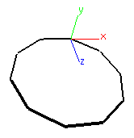
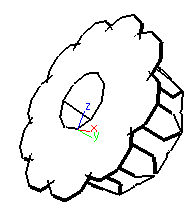

Fluxus manual v0.8 : (C) 2005 Dave Griffiths : dave at pawfal dot org : www.pawfal.org
14.0 Turtle builder
The turtle polybuilder is an experimental way of building polygonal objects
using a logo style turtle in 3D space. as you drive the turtle around you can
place vertices and build shapes procedurally.
(turtle-prim type)
starts a new primitive of the type specified:
0: triangle strip
1: quad list
2: triangle list
3: triangle fan
4: general polygon
(turtle-move distance)
moves the turtle forward in it's current orientation
(turtle-turn anglevec)
rotates the turtle's orientation with the supplied euler angles
(turtle-vert)
creates a new vertex in the current position
(turtle-build)
builds the object with the vertex list defined and gives it to the renderer
(turtle-reset)
resets the current postion and rotation of the turtle
time for some examples:
this script simply builds a single polygon circle, by playing the age old turtle
trick of looping a function that moves a bit, turns a bit...
(define (build n)
(turtle-reset)
(turtle-prim 4)
(build-loop n n)
(turtle-build))
(define (build-loop n t)
(turtle-turn (vector 0 (/ 360 t) 0))
(turtle-move 1)
(turtle-vert)
(if (< n 1)
0
(build-loop (- n 1) t)))
(backfacecull 0)
(clear)
(hint-unlit)
(hint-wire)
(line-width 4)

a circle
for a more complex example, just modfiy the (build-loop) function as so:
(define (build-loop n t)
(turtle-turn (vector 0 (/ 360 t) 0))
(turtle-move 1)
(turtle-vert)
(if (< n 1)
0
(begin
(build-loop (- n 1) t) ; add another call to the recursion
(turtle-turn (vector 0 0 45)) ; twist a bit
(build-loop (- n 1) t))))

a circle of circles